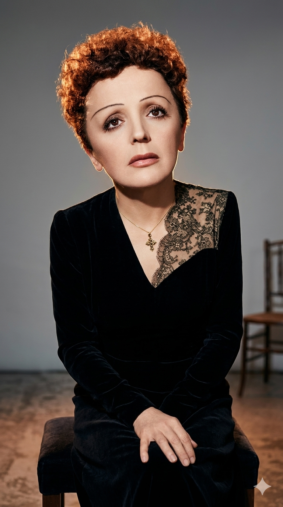

אדית פיאף
Édith Piaf
אטימולוגיה ומקור השם המלא
שם פרטי: אדית (Édith)
מקור אנגלי עתיק (Eadgyth). מורכב מהמילים "ead" שמשמעותה עושר/מבורך, ו-"gyth" שמשמעותה מלחמה או מאבק. היא נקראה כך על שם אדית קאוול, אחות בריטית שהוצאה להורג על ידי הגרמנים במלחמת העולם הראשונה, כחודשיים לפני לידתה של פיאף, והפכה לסמל של גבורה והקרבה.
שם אמצעי: ג'ובאנה (Giovanna)
מקור איטלקי, הצורה הנקבית ל"יוחנן" (John). המשמעות היא "אלוהים הוא חנון" או "מתנת האל". השם ניתן לה בהשפעת מוצאה האיטלקי-מרוקאי של אמה (אניטה מאייר).
שם משפחה מקורי: גסיון (Gassion)
שם משפחה צרפתי ממקור גאלו-רומי. ייתכן שנגזר משם פרטי קדום (Gassius) או מתיאור לאדם שהגיע מאזור מסוים (גסקוניה) בדרום-מערב צרפת. אביה, לואי אלפונס גסיון, היה אקרובט קרקס ונער גומי.
שם במה: פיאף (Piaf)
מילה מסלנג פריזאי (Argot) שפירושה "דרור" או "ציפור קטנה". השם הוענק לה על ידי לואי לפלה (Louis Leplée), בעל מועדון לילה שגילה אותה שרה ברחוב. הוא העניק לה את הכינוי "La Môme Piaf" (הילדונת דרור) בשל קומתה הזעירה (1.42 מטר), שבריריותה והאנרגיה העצבנית והעוצמתית שלה כשהופיעה.
מיתוס ומציאות: ילדותה של "ילדת האשפתות"
מיתוס הלידה ברחוב: האגדה המפורסמת ביותר מספרת שפיאף נולדה תחת פנס רחוב, על גלימתו של שוטר שעבר במקרה ברובע בלוויל (Belleville). במציאות, תעודת הלידה הרשמית שלה מוכיחה שהיא נולדה בצורה מסודרת בבית החולים "טנון" (Hôpital Tenon) ב-19 בדצמבר 1915. עם זאת, המיתוס שירת היטב את בניית הדמות הטראגית שלה וטופח על ידה ועל ידי מנהליה.
הגידול בבית בושת: אמה (זמרת רחוב) נטשה אותה זמן קצר לאחר לידתה. אביה, שהתגייס למלחמת העולם הראשונה, העביר אותה להשגחת סבתו שניהלה בית בושת בעיירה ברנה בנורמנדי. פיאף אכן גודלה במשך מספר שנים על ידי הפרוצות של המקום, שהעניקו לה את החום, הדאגה והאהבה שהיו חסרים לה מבית אמה.
העיוורון והנס: בילדותה סבלה פיאף מדלקת קרנית קשה (Keratitis) שכמעט עיוורה אותה לחלוטין. הפרוצות מבית הבושת אספו כסף ולקחו אותה למסע עלייה לרגל לקברה של תרז הקדושה מליזייה כדי לבקש רחמים. ראייתה אכן חזרה אליה זמן קצר לאחר מכן, אירוע שפיאף ייחסה לנס מיסטי. מאז, נשאה תליון של הקדושה על צווארה עד יומה האחרון.
אל במות הרחוב: בנעוריה חזרה לפריז, הצטרפה לאביה במופעי אקרובטיקה ברחוב, שם החלה לשיר לראשונה כדי לאסוף את הנדבות מהקהל, והבינה שקולה העצום הוא כלי ההישרדות האמיתי שלה.
אידאולוגיה והישגים
קולה של צרפת: פיאף הפכה לסמל התרבותי הבולט ביותר של צרפת במאה ה-20 ולסמל ההתנגדות והתקווה במהלך הכיבוש הנאצי במלחמת העולם השנייה. קולה הרועד והעוצמתי היה מזוהה לחלוטין עם הנשמה הפריזאית.
אידאולוגיה אמנותית (כנות טוטאלית): האמנות שלה דרשה התערטלות רגשית מוחלטת. היא שרה תמיד בשמלה שחורה פשוטה, כדי ששום דבר לא יסיח את הדעת מהקול ומההבעה. היא שרה את חייה שלה: על אהבות טרגיות, אובדן (כמו מות אהוב ליבה, המתאגרף מרסל סרדן, בתאונת מטוס), בדידות והרחוב.
הישגים בינלאומיים וטיפוח דור ההמשך: למרות חסרונותיה הפיזיים (מראה שברירי, בעיות בריאות קשות והתמכרויות), היא כבשה במות בעולם כולו, כולל הצלחה נדירה לאמן צרפתי בקרנגי הול בניו יורק. במקביל, היא שימשה כמנטורית וכקרש קפיצה לאמנים צעירים רבים שהפכו לענקים בזכותה, כגון איב מונטאן, שארל אזנבור, וז'ורז' מוסטקי.
השירים הגדולים
• מקורות מחקר:
- Piaf: A Biography מאת מוניק לאנג (Monique Lange).
- ארכיון עיריית פריז - תעודת הלידה הרשמית של אדית ג'ובאנה גסיון מבית החולים טנון, המפריכה את מיתוס הלידה ברחוב.
- Piaf מאת סימון ברטו (Simone Berteaut) - אחותה למחצה של פיאף, המספקת עדות ממקור ראשון (אם כי לעיתים מועצמת) על שנות הרחוב.